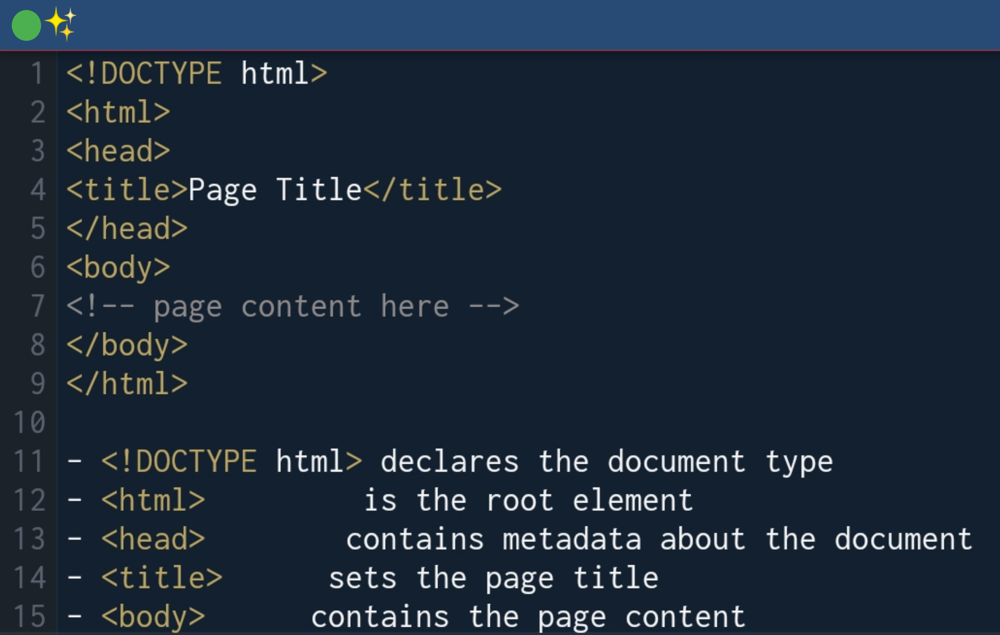
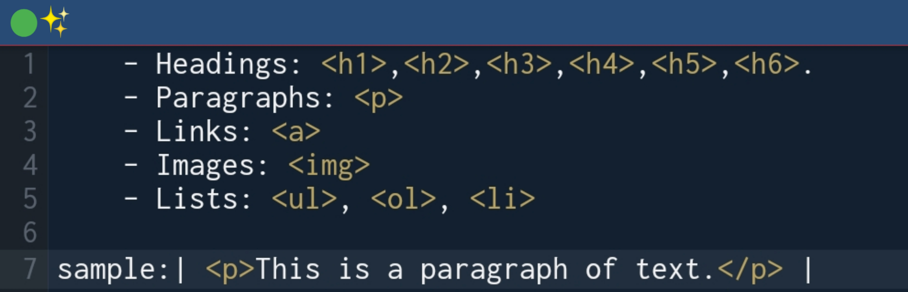
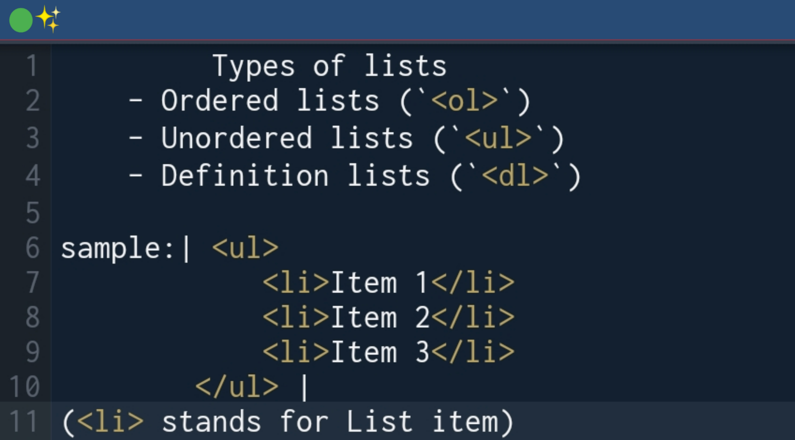
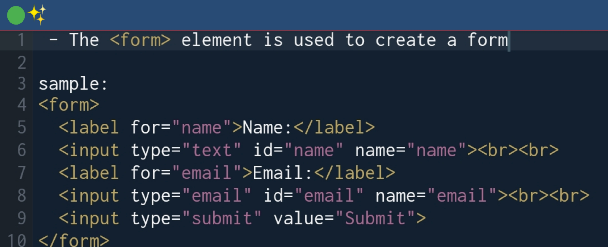
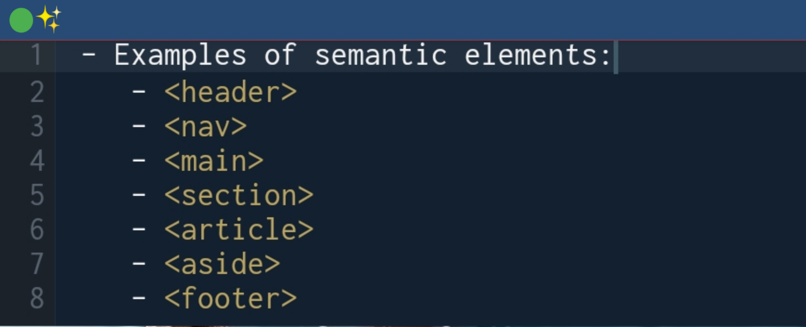

Welcome🎉 Dear subscribers who made it fit to visit this site to improve on your coding performance
Tutorials:
HTML; (Hypertext Markup Language)...
Here's a step-by-step tutorial breakdown on HTML for a beginner:
Step 1: Introduction to HTML
- HTML stands for HyperText Markup Language
- HTML is used to create the structure and content of web pages
- HTML is not a programming language, but rather a markup language
Step 2: Basic HTML Structure
- HTML documents consist of a series of elements, represented by tags
- The basic structure of an HTML document is:

Step 3: HTML Elements
- HTML elements are represented by tags, which are surrounded by angle brackets (`<` and `>`)
- Tags usually come in pairs, with the opening tag preceding the content and the closing tag following the content
- Example:
- Common HTML elements:

Step 4: HTML Attributes
- HTML attributes provide additional information about an element
- Attributes are added to the opening tag of an element
- Example:
- Common HTML attributes:

Step 5: HTML Lists
- HTML lists are used to display a collection of items
- There are three types of lists:

- List items can contain other HTML elements, such as links and images
Step 6: HTML Links
- HTML links are used to create hyperlinks between web pages.(check sample 6 in step 4).
- Links can be styled using CSS
Step 7: HTML Images
- HTML images are used to add images to web pages
- Example:

- Images can be styled using CSS
Step 8: HTML Tables
- HTML tables are used to display tabular data
- Example:

- Tables can be styled using CSS
Step 9: HTML Forms
- HTML forms are used to collect user input
- Example:

- Forms can be styled using CSS
Step 10: HTML Semantic Elements
- HTML semantic elements provide meaning to the structure of a web page

- Semantic elements can be styled using CSS
That's a basic overview of HTML! Of course,
there's more to learn, but this should give you a good starting point.
CSS; (Cascading Style Sheets)...
Here's a step-by-step tutorial breakdown on CSS for a beginner:
Step 1: Introduction to CSS
- CSS stands for Cascading Style Sheets
- CSS is used to control the layout and appearance of web pages
- CSS is used to separate presentation from structure (HTML)
Step 2: Basic CSS Syntax
- CSS syntax consists of a selector, a property, and a value
- Example:
h1 { color: blue; }
- Selectors can be HTML elements, classes, IDs, or combinations of these
Step 3: CSS Selectors
- HTML element selectors: h1, p, img, etc.
- Class selectors: .header, .footer, .nav, etc.
- ID selectors: #header, #footer, #nav, etc.
- Combinators: h1.header, .nav ul, etc.
Step 4: CSS Properties and Values
- Properties: color, background-color, font-size, etc.
- Values: blue, #ffffff, 16px, etc.
- Units: px, %, em, rem, etc.
Step 5: CSS Colors
- Color names: red, blue, green, etc.
- Hexadecimal colors: #ff0000, #00ff00, #0000ff, etc.
- RGB colors: rgb(255, 0, 0), rgb(0, 255, 0), rgb(0, 0, 255), etc.
Step 6: CSS Text Properties
-font-family: specifies the font family
-font-size: specifies the font size
-font-style: specifies the font style (normal, italic, oblique)
-font-weight: specifies the font weight (normal, bold, bolder, lighter)
-text-align: specifies the text alignment (left, right, center, justify)
-text-decoration: specifies the text decoration (none, underline, overline, line-through)
-text-transform: specifies the text transformation (none, uppercase, lowercase, capitalize)
Step 7: CSS Box Model
- The box model consists of four parts: content, padding, border, and margin
-width and height properties specify the width and height of the content area
-padding property specifies the padding between the content area and the border
-border property specifies the border around the padding
- margin property specifies the margin between the border and other elements
Step 8: CSS Layout
-display property specifies the display type (block, inline, inline-block, etc.)
-position property specifies the position type (static, relative, absolute, fixed, etc.)
-float property specifies the float type (left, right, none)
-clear property specifies the clear type (left, right, both, none)
Step 9: CSS Media Queries
- Media queries allow you to apply different styles based on different media types (screen, print, etc.) or conditions (width, height, etc.)
- Example:

Step 10: CSS Preprocessors and Frameworks
- CSS preprocessors like Sass and Less allow you to write more efficient and modular CSS code
- CSS frameworks like Bootstrap and Tailwind CSS provide pre-designed CSS components and layouts to speed up development
That's a basic overview of CSS! Of course,
there's more to learn, but this should give you a good starting point.
Great 😃 Now lets create a simple site together
I recommend you download TrebEdit App for Mobile phone
.step-by-step guide to creating a simple page
Step 1: Define the HTML Structure
Create an HTML file and add the following structure:

Step 2: Create a CSS File
Create a new file called style.css and add the following code:

if you did that correctly this is how your code should display

Lets see how far you've learnt; modernize the task above and send it HERE!